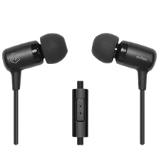

01
원천기술 개발
음향 관련 핵심 부품과 드라이버 기술을 자체적으로 연구하며, 제품의 기초가 되는 소리의 구조부터 설계합니다.

소리의 기준을 다시 설계하는 음향 기술 중심 기업
㈜소니캐스트는 음향공학 기반의 기술 개발을 통해
세계적 수준의 사운드 경험을 설계합니다.
소니캐스트는 음향 관련 원천기술과 핵심 부품 개발,
정밀 측정 기술을 바탕으로 국내 음향 산업의 발전을 이끌고 있습니다.
끊임없는 연구와 도전을 통해 고객에게 새로운 경험과 가치를 제공하며,
기술 중심의 글로벌 음향 기업으로 성장하고 있습니다.
세계 최고 수준의 음향 기술력과 전문성을 기반으로,
고객과 함께 성장하는 신뢰받는 파트너이자
대한민국을 대표하는 음향 브랜드를 실현해 나가겠습니다.
음향 관련 핵심 부품과 드라이버 기술을 자체적으로 연구하며, 제품의 기초가 되는 소리의 구조부터 설계합니다.
소니캐스트 개발 총괄 책임자인 이신렬 박사님은 IEC 오디오 부문 한국대표, 한국음향학회 오디오기기분과 위원장 및 국내 대기업 음향 기술 자문을 역임했습니다.

DIREM E3는 Audio Precision, G.R.A.S, Klippel, SoundCheck, B&K 등 세계 최고 수준의 음향 측정 및 분석 장비를 통해 개발되었습니다.


전문 모니터링을 위한 플래그십 유선 인이어
USB-C DAC와 SF 드라이버 기반 고해상도 사운드
MMCX 단자와 정밀 튜닝을 갖춘 프로 라인
세계 최초 음향표준 이어폰 콘셉트의 기준 제품
USB-C DAC 내장형 전문가용 인이어
초저노이즈와 높은 호환성을 갖춘 휴대용 DAC
소니캐스트의 음향 기술을 담은 대표 라인업
제품 사운드와 개발 스토리를 영상 콘텐츠로 전달합니다.
해외 고객을 위한 브랜드 소개와 제품 콘텐츠를 제공합니다.
실사용자 피드백과 제품 문의를 연결하는 커뮤니티 채널입니다.
기술, 제품, 브랜드 소식을 아카이빙하는 공식 콘텐츠 공간입니다.